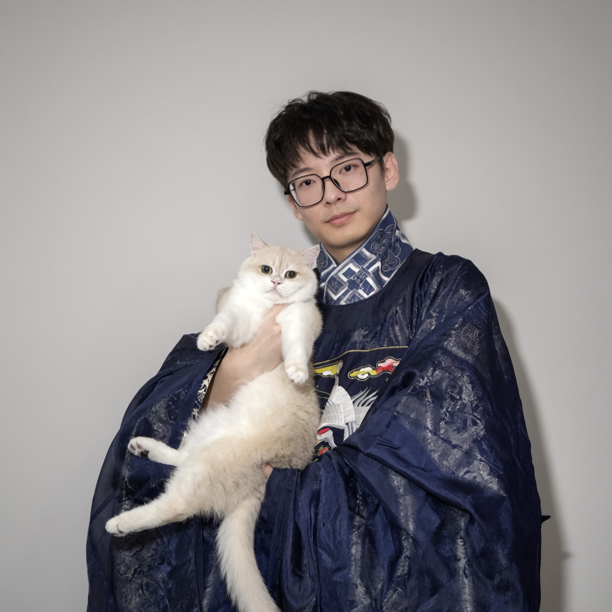

Hello there! My name is Ziyang Zhang, currently a 3rd-year Ph.D. student in Computer Science and Informatics at Emory University, advised by Dr. Carl Yang. I study AI for health and LLM agents. In 2025-2026, I had the honor working with Dr. Fan Zhang in Health AI team at Google Research, where we applied Gemini in diverse real-world primary care settings. Before my Ph.D. journey, I was pursuing a Master’s degree at Emory and exited the program in 2024 when I transferred to the Ph.D. I obtained my Bachelor’s degree at Shenzhen University.
Outside of my research, I enjoy a bunch of stuffs like video games, traveling, animes, TV shows, sports, cars, etc. If you’ve ever been to my parties, you also know that I’m a (amateur) bartender and barista.
Research Interests: My research focuses on LLM agents, harnesses, and AI R&D; health-oriented multimodal learning with EHR and multi-omics data; graph neural networks, including hypergraphs; and disease prediction and subtyping, particularly type 2 diabetes.
*Equal contributions and corresponding authors.
We study whether language models can improve initial care by identifying clinical actions missed in historical encounters. Med-BNA (Medical Best Next Action) combines clinician-reconstructed care pathways with a multi-agent simulation that separates patient history from hospital findings, requiring models to gather information and make sequential clinical decisions. The study suggests that models have the potential to identify gaps in care, while reliable clinical assistance requires stronger information gathering, patient counseling, and disposition planning. More details will be shared when available.
We study disease heterogeneity through graph and hypergraph representations of electronic health records, with a particular focus on type 2 diabetes. This research line connects TACCO, phenotype-genotype co-learning (MedInfo 2025), joint learning of complication risks and subtypes, and recent work on longitudinal trajectory subtyping. Our methods model relationships among clinical concepts, patient visits, and disease trajectories, and validate the resulting subtypes using phenotypes, genetics, and clinical outcomes. Together, these studies aim to connect subtype discovery with biological interpretation and differences in disease progression.
A general-purpose software package for EHR hypergraph modeling, outcome prediction, and patient subtyping is available in ehr-hypergraph.